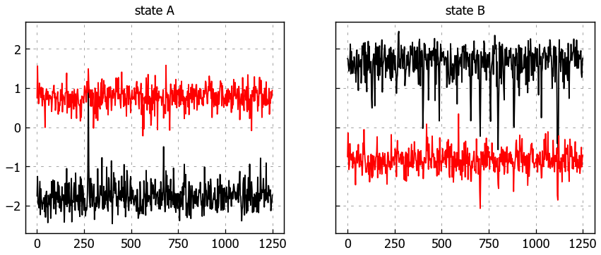
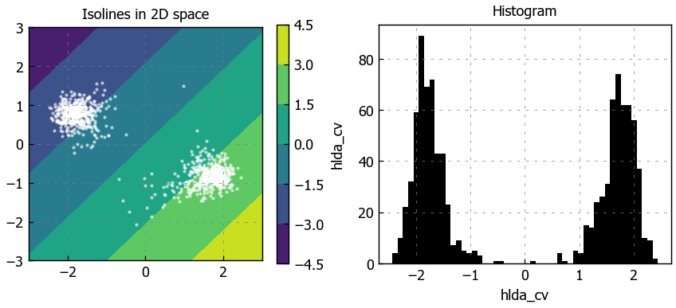
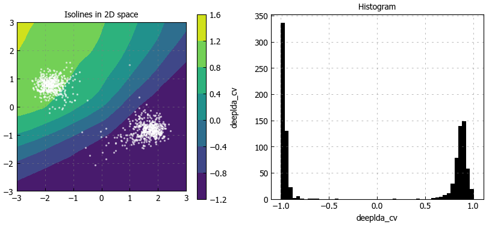

LDA & Deep-LDA - Toy model#
Data-driven collective variables built upon Fisher’s discriminant analysis, both in its linear and non-linear version.
System: Wolfe-Quapp 2D potential (rotated)
Overview#
import torch
import numpy as np
import pandas as pd
from thatool.io import read_data
from thatool.vis import matplot_style
import matplotlib.pyplot as plt
plt.style.use(matplot_style.light)
dir_nb = globals()['_dh'][0]
Data#
Download data from repo: luigibonati/mlcvs
import requests
# Download data from GitHub to this notebook's local drive
files = ['data/2d_model/COLVAR_stateA', 'data/2d_model/COLVAR_stateB']
for file in files:
url = "https://raw.githubusercontent.com/luigibonati/mlcvs/main/docs/notebooks/" + file
r = requests.get(url)
with open(file, 'wb') as f:
f.write(r.content)
Load data#
# Load colvar files as pandas dataframes
dataA = read_data.matrix_auto("data/2d_model/COLVAR_stateA", column_line=0)
dataB = read_data.matrix_auto("data/2d_model/COLVAR_stateB", column_line=0)
# Create input datasets
xA = dataA.filter(regex="p.*").values
xB = dataB.filter(regex="p.*").values
names = dataA.filter(regex="p.*").columns.values
# Create labels
yA = np.zeros(len(dataA))
yB = np.ones(len(dataB))
# Concatenate
X = np.concatenate([xA, xB], axis=0)
y = np.concatenate([yA, yB], axis=0)
# Shuffle
np.random.seed(1)
p = np.random.permutation(len(X))
X, y = X[p], y[p]
# Convert np to torch.Tensors
X = torch.Tensor(X)
y = torch.Tensor(y)
plot states#
dataA
| time | p.x | p.y | |
|---|---|---|---|
| 0 | 0.0 | -1.750000 | 0.750000 |
| 1 | 2.5 | -1.254682 | 1.558291 |
| 2 | 5.0 | -1.952951 | 0.874572 |
| 3 | 7.5 | -1.959987 | 0.599997 |
| 4 | 10.0 | -2.056896 | 0.609804 |
| ... | ... | ... | ... |
| 496 | 1240.0 | -1.596924 | 0.608113 |
| 497 | 1242.5 | -2.128538 | 0.907752 |
| 498 | 1245.0 | -1.966120 | 0.736077 |
| 499 | 1247.5 | -1.909419 | 0.787014 |
| 500 | 1250.0 | -1.731548 | 0.941230 |
501 rows × 3 columns
## plot
fig, axs = plt.subplots(nrows=1, ncols=2, figsize=(8,3), sharey=True)
axs[0].plot(dataA['time'], dataA.filter(regex='p')) # plot p.*
axs[1].plot(dataB['time'], dataB.filter(regex='p')) # plot p.*
axs[0].set_title('state A')
axs[1].set_title('state B')
plt.show()

Plotting functions
def plot_isolines_grid(cv,limits=((-3,3),(-3,3)),num_points=(50,50),scatter=None,ax=None):
if type(num_points) == int:
num_points = (num_points,num_points)
# Define grid and evaluate cv on it
xx = np.linspace(limits[0][0],limits[0][1],num_points[0])
yy = np.linspace(limits[1][0],limits[1][1],num_points[1])
xv, yv = np.meshgrid(xx, yy, indexing='xy')
z = np.zeros_like(xv)
for i in range(num_points[0]):
for j in range(num_points[1]):
xy = torch.Tensor([xv[i,j], yv[i,j]])
z[i,j] = cv(xy)
# Setup plot
if ax is None:
_, ax = plt.subplots(figsize=(5,4.), dpi=100)
ax.set_title(f'{cv.name_} isolines')
# Plot countour plot
h = ax.contourf(xx, yy, z)
cbar = plt.colorbar(h,ax=ax)
cbar.set_label(f'{cv.name_}')
# Scatter plot with training data
if scatter is not None:
ax.scatter(scatter[:,0],scatter[:,1],s=2,c='white',alpha=0.5)
ax.set_aspect('equal')
def plot_cv_histogram(s,label=None,ax=None,**kwargs):
# Setup plot
if ax is None:
_, ax = plt.subplots(figsize=(5,4.), dpi=100)
ax.set_title('Histogram')
if (type(s)==torch.Tensor):
s = s.squeeze(1).detach().numpy()
# Plot histogram
ax.hist(s,**kwargs)
if label is not None:
ax.set_xlabel(label)
HLDA: Harmonic Linear Discriminant Analysis#
Reference: Mendels, Piccini, Parrinello, JCPL 2018.
Data#
X, y from previous cell
n_features = X.shape[1]
feature_names = names
Train CV#
from mlcvs.lda import LDA_CV
hlda = LDA_CV(n_features=n_features, harmonic_lda=True)
hlda.fit(X, y)
c:\DevProgram\miniconda3\envs\py39mlcvs\lib\site-packages\mlcvs\lda\lda.py:118: UserWarning: torch.cholesky is deprecated in favor of torch.linalg.cholesky and will be removed in a future PyTorch release.
L = torch.cholesky(A)
should be replaced with
L = torch.linalg.cholesky(A)
and
U = torch.cholesky(A, upper=True)
should be replaced with
U = torch.linalg.cholesky(A).mH().
This transform will produce equivalent results for all valid (symmetric positive definite) inputs. (Triggered internally at C:\cb\pytorch_1000000000000\work\aten\src\ATen\native\BatchLinearAlgebra.cpp:1626.)
L = torch.cholesky(S_w, upper=False)
c:\DevProgram\miniconda3\envs\py39mlcvs\lib\site-packages\mlcvs\lda\lda.py:127: UserWarning: torch.symeig is deprecated in favor of torch.linalg.eigh and will be removed in a future PyTorch release.
The default behavior has changed from using the upper triangular portion of the matrix by default to using the lower triangular portion.
L, _ = torch.symeig(A, upper=upper)
should be replaced with
L = torch.linalg.eigvalsh(A, UPLO='U' if upper else 'L')
and
L, V = torch.symeig(A, eigenvectors=True)
should be replaced with
L, V = torch.linalg.eigh(A, UPLO='U' if upper else 'L') (Triggered internally at C:\cb\pytorch_1000000000000\work\aten\src\ATen\native\BatchLinearAlgebra.cpp:2806.)
eigvals, eigvecs = torch.symeig(S_new, eigenvectors=True)
Plot results#
_, axs = plt.subplots(1,2, figsize=(8,3), dpi=130)
# CV isolines
axs[0].set_title(f'Isolines in 2D space')
plot_isolines_grid(hlda, scatter=X, num_points=50, ax=axs[0])
# Calculate CV values over training set
axs[1].set_title(f'Histogram')
s = hlda(X)
plot_cv_histogram(s,label=hlda.name_,bins=50, ax=axs[1] )

Get PLUMED input#
hlda.set_params({"feature_names": feature_names})
print( hlda.plumed_input() )
hlda_cv: CUSTOM ARG=p.x,p.y VAR=x0,x1 FUNC=0.689055*x0-0.724709*x1 PERIODIC=NO
Deep-LDA: Neural network-based discriminant analysis#
Reference: Bonati, Rizzi, Parrinello, JCPL 2020.
Data#
X, y from previous cell
n_features = X.shape[1]
feature_names = names
# split train/test
ntrain,nvalid = 800,200
# ... replace with dataloder from file
Train CV#
from mlcvs.lda import DeepLDA_CV
#------------- PARAMETERS -------------
nodes = [n_features,30,30,5]
lrate = 0.001
sw_reg = 0.05
l2_reg = 1e-5
num_epochs = 1000
earlystop = True
es_patience = 20
es_consecutive = False
es_min_delta = 0.05
log_every = 100
#--------------------------------------
# DEVICE
device = torch.device("cuda" if torch.cuda.is_available() else "cpu")
# MODEL
model = DeepLDA_CV(nodes)
model.set_device(device)
# REGULARIZATION
model.set_regularization(sw_reg=sw_reg)
model.set_earlystopping(patience=es_patience,consecutive=es_consecutive,min_delta=es_min_delta)
# TRAIN
model.fit(X=X,y=y, standardize_inputs = True, log_every=log_every)
# standardize outputs
#model.standardize_outputs(train_data[0].to(device))
Created dataloaders
Training set: 801
Validation set: 201
epoch loss_train loss_valid
100 -48.320 -47.649
INFO: Early stopping
184 -60.583 -58.717
# get back to CPU
model.to('cpu')
DeepLDA_CV(
(nn): Sequential(
(0): Linear(in_features=2, out_features=30, bias=True)
(1): ReLU(inplace=True)
(2): Linear(in_features=30, out_features=30, bias=True)
(3): ReLU(inplace=True)
(4): Linear(in_features=30, out_features=5, bias=True)
)
)
Plot learning curve#
loss_train = model.logs['loss_train']
loss_valid = model.logs['loss_valid']
# Plot Loss function
fig, ax = plt.subplots(figsize=(4,3),dpi=130)
ax.plot(loss_train,'-',label='Train')
ax.plot(loss_valid,'--',label='Valid')
ax.set_ylabel('Loss Function')
ax.set_xlabel('#Epochs')
ax.legend(ncol=2)
# if model.earlystopping_.early_stop:
# ax.axvline(model.earlystopping_.best_epoch,ls='dotted',c='grey',label='Early Stopping')
plt.show()
c:\DevProgram\miniconda3\envs\py39mlcvs\lib\site-packages\numpy\core\shape_base.py:65: FutureWarning: The input object of type 'Tensor' is an array-like implementing one of the corresponding protocols (`__array__`, `__array_interface__` or `__array_struct__`); but not a sequence (or 0-D). In the future, this object will be coerced as if it was first converted using `np.array(obj)`. To retain the old behaviour, you have to either modify the type 'Tensor', or assign to an empty array created with `np.empty(correct_shape, dtype=object)`.
ary = asanyarray(ary)
c:\DevProgram\miniconda3\envs\py39mlcvs\lib\site-packages\numpy\core\shape_base.py:65: VisibleDeprecationWarning: Creating an ndarray from ragged nested sequences (which is a list-or-tuple of lists-or-tuples-or ndarrays with different lengths or shapes) is deprecated. If you meant to do this, you must specify 'dtype=object' when creating the ndarray.
ary = asanyarray(ary)
Plot results#
_, axs = plt.subplots(1,2, figsize=(10,4.), dpi=100)
# CV isolines
axs[0].set_title(f'Isolines in 2D space')
plot_isolines_grid(model, scatter=X, num_points=50, ax=axs[0])
# Calculate CV values over training set
axs[1].set_title(f'Histogram')
s = model(X)
plot_cv_histogram(s,label=model.name_,bins=50, ax=axs[1] )
